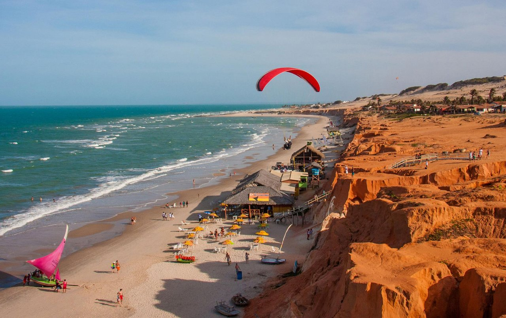
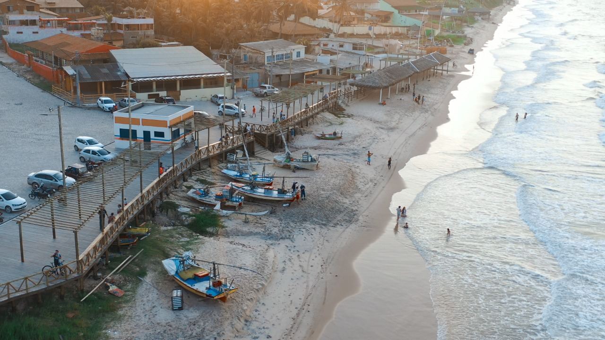
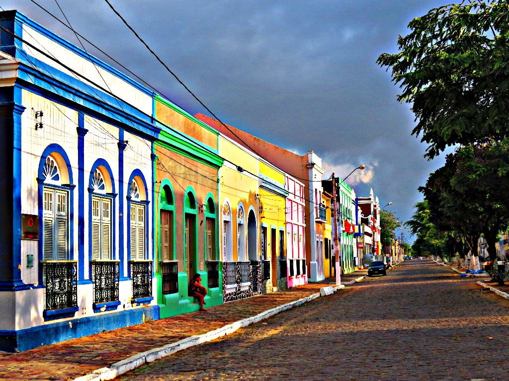
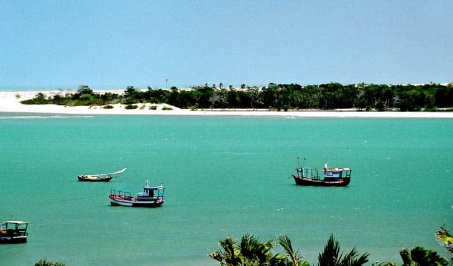
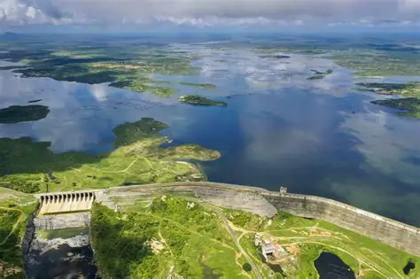
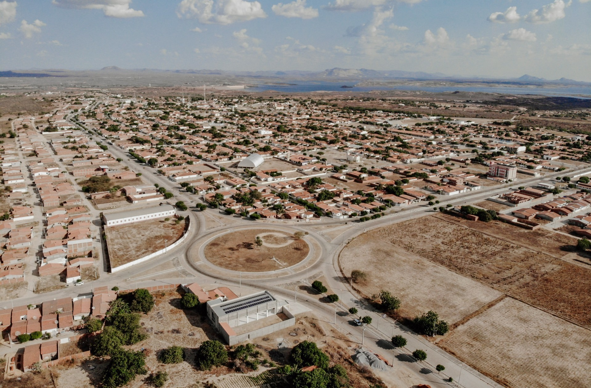
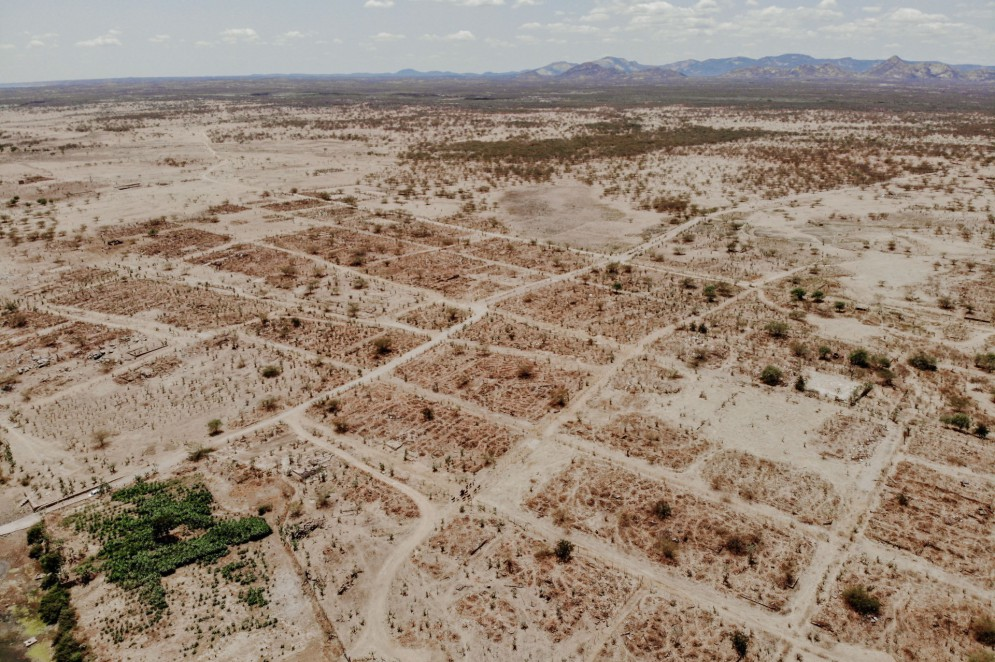
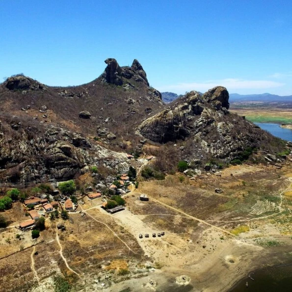
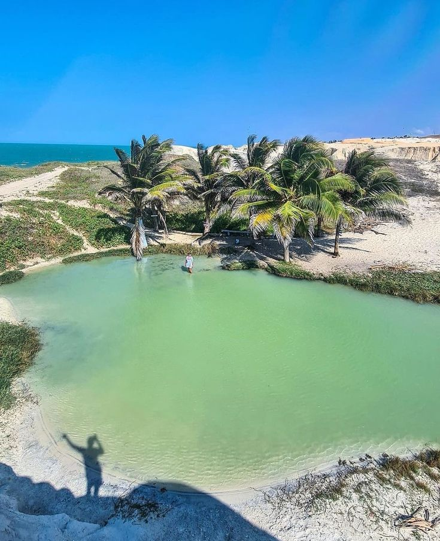
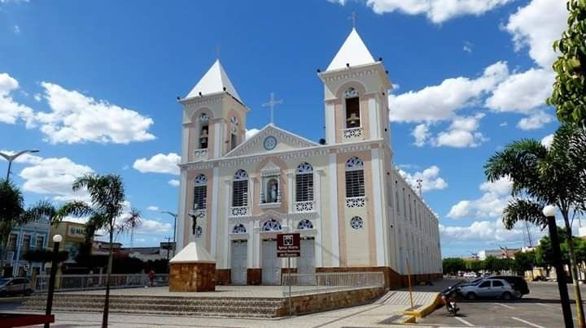

Canoa QuebradaPraia famosa por suas falésias coloridas, mar cristalino e passeios de buggy, sendo um dos destinos turísticos mais conhecidos do Ceará.

MajorlandiaPraia tranquila de Aracati, conhecida por suas falésias avermelhadas, artesanato local e ambiente ideal para descanso.

Centro Historico de AracatiConjunto arquitetônico preservado que reúne casarões coloniais, igrejas e ruas históricas que contam parte da história do Ceará.

Rio JaguaribeMaior rio do estado do Ceará, responsável por abastecer diversas cidades e oferecer belas paisagens ao longo de seu percurso.

Barragem do CastanhaoMaior reservatório de água do Ceará, importante para o abastecimento, pesca, irrigação e turismo na região.

Nova JaguaribaraCidade planejada construída após a formação do Açude Castanhão, oferecendo boa infraestrutura e belas paisagens.

Ruínas da Antiga JaguaribaraRestos da antiga cidade que foi inundada pela construção do Castanhão, tornando-se um importante marco histórico da região.

Sítio Arqueológico de QuixadáÁrea que preserva inscrições rupestres e vestígios de antigos povos, destacando a riqueza histórica e arqueológica do sertão cearense.

QuixabaPraia de águas calmas e ambiente acolhedor, conhecida por sua tranquilidade, culinária regional e belas paisagens naturais.

Igreja Matriz de Nossa Senhora do RosárioImportante patrimônio religioso localizado em Russas, reconhecido por sua arquitetura e relevância histórica para a região.